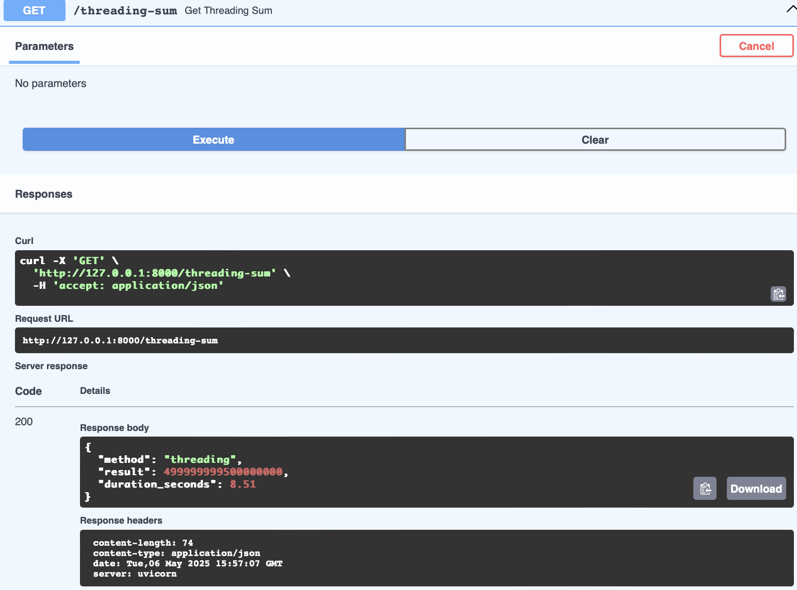
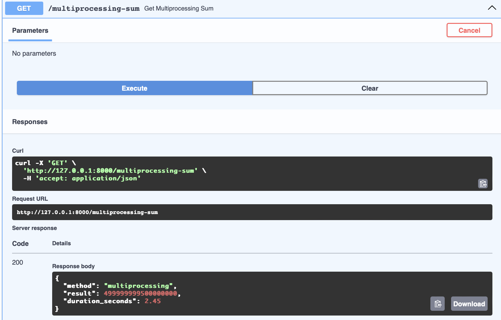
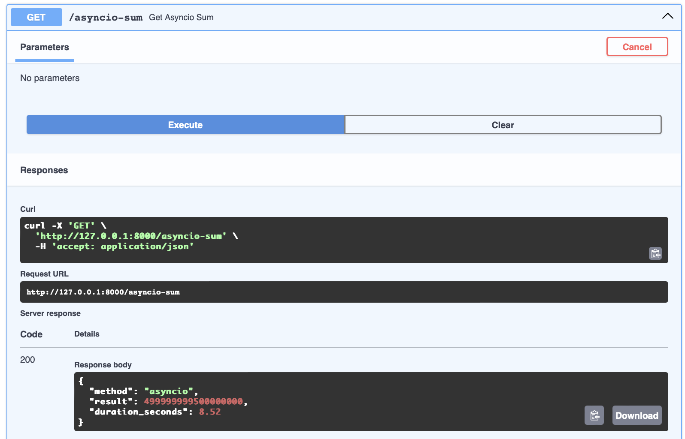

Задача 1. Различия между threading, multiprocessing и async в Python
Задача: Напишите три различных программы на Python, использующие каждый из подходов: threading, multiprocessing и async. Каждая программа должна решать считать сумму всех чисел от 1 до 10000000000000. Разделите вычисления на несколько параллельных задач для ускорения выполнения.
Подробности задания:
- Напишите программу на Python для каждого подхода: threading, multiprocessing и async.
- Каждая программа должна содержать функцию calculate_sum(), которая будет выполнять вычисления.
- Для threading используйте модуль threading, для multiprocessing - модуль multiprocessing, а для async - ключевые слова async/await и модуль asyncio.
- Каждая программа должна разбить задачу на несколько подзадач и выполнять их параллельно.
- Замерьте время выполнения каждой программы и сравните результаты.
Treading
import threading
import time
def partial_sum(start, end, result, index):
result[index] = sum(range(start, end))
def calculate_sum():
num_threads = 4
n = 1_000_000_000
step = n // num_threads
threads = []
result = [0] * num_threads
for i in range(num_threads):
start = i * step
end = n if i == num_threads - 1 else (i + 1) * step
t = threading.Thread(target=partial_sum, args=(start, end, result, i))
threads.append(t)
t.start()
for t in threads:
t.join()
return sum(result)
Полученный результат:

threading подходит для задач с ожиданием (I/O-bound)Где использовать: * Скачивание файлов * Работа с сетью (если библиотека блокирующая) * Мониторинг, логирование
Почему: * Потоки хорошо работают, когда много ожидания * GIL не мешает, если CPU почти не загружен * Легко реализуется, особенно для небольшого числа задач
Multiprocessing
import multiprocessing
import time
def partial_sum(start, end):
return sum(range(start, end))
def calculate_sum():
num_processes = 4
n = 1_000_000_000
step = n // num_processes
pool = multiprocessing.Pool(processes=num_processes)
tasks = [(i * step, n if i == num_processes - 1 else (i + 1) * step) for i in range(num_processes)]
results = pool.starmap(partial_sum, tasks)
pool.close()
pool.join()
return sum(results)
Полученный результат:

multiprocessing подходит для тяжёлых вычислений (CPU-bound)Где использовать: * Обработка изображений и видео * Машинное обучение, анализ данных * Генерация отчетов, сжатие/шифрование
Почему: * Использует несколько ядер процессора * Обходит GIL (Global Interpreter Lock) * Подходит для задач, которые нагружают процессор
Asyncio
import asyncio
import time
async def partial_sum(start, end):
return sum(range(start, end))
async def calculate_sum():
n = 1_000_000_000
num_tasks = 4
step = n // num_tasks
tasks = []
for i in range(num_tasks):
start = i * step
end = n if i == num_tasks - 1 else (i + 1) * step
tasks.append(partial_sum(start, end))
results = await asyncio.gather(*tasks)
return sum(results)
Полученный результат:

asyncio подходит для масштабируемых I/O-задачГде использовать: * Чат-боты (например, Telegram, Discord) * Веб-сервисы, API-клиенты * Работа с базами данных через async-библиотеки
Почему: * Легкий, не создает новые потоки или процессы * Отлично масштабируется (тысячи соединений) * Идеален для высококонкурентных I/O-задач
Итоговая сравнительная таблица трех подходов:
| Метод | Результат | Время (сек) | Причина скорости/медленности | Частое применение |
|---|---|---|---|---|
| Multiprocessing | 499999999500000000 | 2.45 | Запускает процессы в разных ядрах, использует многопроцессорность — нет GIL | Тяжелые вычисления (CPU-bound), аналитика, ML |
| Threading | 499999999500000000 | 8.51 | Все потоки делят один процесс, блокируются GIL — неэффективно при CPU-bound | Сетевые запросы, фоновые задачи, I/O |
| Asyncio | 499999999500000000 | 8.52 | Асинхронность не ускоряет чисто вычислительные задачи (нет await I/O) | Веб-сервисы, боты, массовые асинхронные I/O задачи |